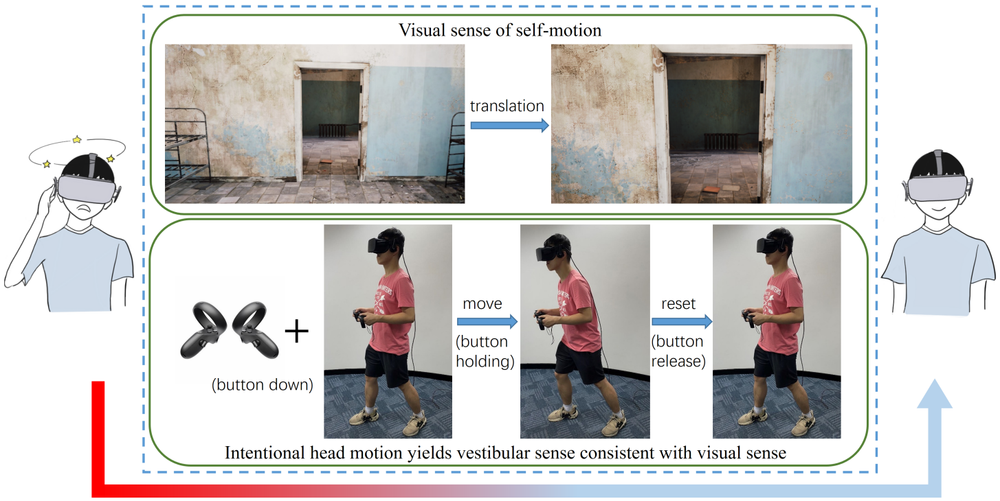

Intentional Head-Motion Assisted Locomotion for Reducing Cybersickness
Zehui Lin, Xiang Gu, Sheng Li, Zhiming Hu, Guoping Wang
IEEE Transactions on Visualization and Computer Graphics (TVCG, oral presentation at IEEE VR 2022), 2023, 29(8): 3458-3471.

Abstract
We present an efficient locomotion technique that can reduce cybersickness through aligning the visual and vestibular induced self-motion illusion. Our locomotion technique stimulates proprioception consistent with the visual sense by intentional head motion, which includes both the head’s translational movement and yaw rotation. A locomotion event is triggered by the hand-held controller together with an intended physical head motion simultaneously. Based on our method, we further explore the connections between the level of cybersickness and the velocity of self motion through a series of experiments. We first conduct Experiment 1 to investigate the cybersickness induced by different translation velocities using our method and then conduct Experiment 2 to investigate the cybersickness induced by different angular velocities. Our user studies from these two experiments reveal a new finding on the correlation between translation/angular velocities and the level of cybersickness. The cybersickness is greatest at the lowest velocity using our method, and the statistical analysis also indicates a possible U-shaped relation between the translation/angular velocity and cybersickness degree. Finally, we conduct Experiment 3 to evaluate the performances of our method and other commonly-used locomotion approaches, i.e., joystick-based steering and teleportation. The results show that our method can significantly reduce cybersickness compared with the joystick-based steering and obtain a higher presence compared with the teleportation. These advantages demonstrate that our method can be an optional locomotion solution for immersive VR applications using commercially available HMD suites only.Presentation Video
Links
BibTeX
@article{lin22intentional,
author={Lin, Zehui and Gu, Xiang and Li, Sheng and Hu, Zhiming and Wang, Guoping},
journal={IEEE Transactions on Visualization and Computer Graphics},
title={Intentional Head-Motion Assisted Locomotion for Reducing Cybersickness},
year={2023},
volume={29},
number={8},
pages={3458--3471},
doi={10.1109/TVCG.2022.3160232}}